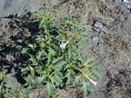
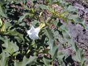
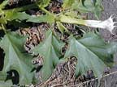
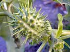
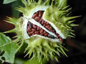
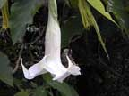

Thorn apple
Datura stramonium
Other names
Jimson weed
Description
Thorn apple is a large annual with forked branches, growing up to 1m. The leaves are up to 20cm long, irregularly pointed at the edges and sometimes yellowish near the base. The flowers are single and erect white / purple trumpets up to 10cm long. The fruit is green, spiny, oval and 2 5cm long. If it is split from the apex, four segments are revealed which contain numerous, wrinkled black seeds. The plant has a distinctive, unpleasant odour, especially when bruised or crushed.
Similar plants
Angel’s trumpet (Brugmansia candida) and the similar B. sanguinea, are large shrubs commonly grown in gardens. They occasionally escape, probably in plant clippings, as they are not thought to produce seeds in NZ. They are also poisonous.
Distribution
This is occasionally found in waste places and cultivated land in the N Island, especially near the sea. It is also found in Southland.
Toxin
The alkaloids hyoscyamine and hyoscine are found in all parts of the plant especially the seeds.
Species affected
Cases have occurred in New Zealand in cattle, sheep and horses. Poisoning or suspected poisoning has also occurred in buffalo, goats and pigs. Occasionally used as a recreational drug by people.
Clinical signs acute
The main signs include reddening of the skin (man), dilatation of the pupils, nausea and drowsiness, agitation, rapid irregular heart beat and hallucinations (man), leading to highly abnormal behaviour. This may be followed by convulsions, coma and sometimes death. Delayed visual disturbances may persist for up to 2 weeks. An elevated temperature is usually recorded in thorn apple poisoning and in horses, polydipsia, polyuria and diarrhoea have been noted. Ponies developed impaired vision and intermittent muscle spasms. Eleven of 15 ponies died after eating feed contaminated with the seeds.
Clinical signs chronic
Post mortem signs
Haemorrhages of liver, kidney and heart and congested blood vessels in the lungs.
Diagnosis
Evidence of ingestion and suggestive clinical signs.
Differential diagnosis
Treatment
Symptomatic care. With serious cases the use of anticholinesterases may be justified.
Prognosis
Depends on the amount ingested.
Prevention
Remove plant from paddocks.
References
Conner H.E. The Poisonous Plants In New Zealand. 1992. GP Publications Ltd, Wellington
Cooper M R, Johnson A W. Poisonous Plants and Fungi in Britan: Animals and Human Poisoning. Her Majesty’s Stationary Office. London. 1998
Dirdiri, N.I., Wasfi, A. and Adams, S.E.I. (1981). Toxicity of Datura stramonium to sheep and goats. Vet.Hum.Toxicol. 23:241 246
Parton K, Bruere A.N. and Chambers J.P. Veterinary Clinical Toxicology, 2nd ed. 2001. Veterinary Continuing Education Publication No. 208
Williams, S. and Scott, P. (1984). The Toxicity of Datura stramonium (thorn apple) to horses. N Z vet J. 32:47.
Worthington, T.R. (1981). Toxicity of Thornapple (Datura stramonium L) seed to the pig. Vet Rec. 108:208 211.
 plant |
 |
|
|
 |
|
|
|
 |
 seeds |
|
|
 |
|
|